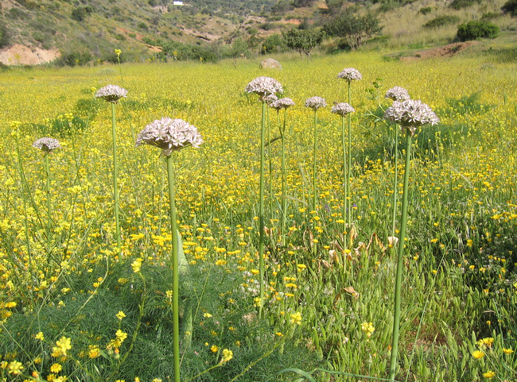
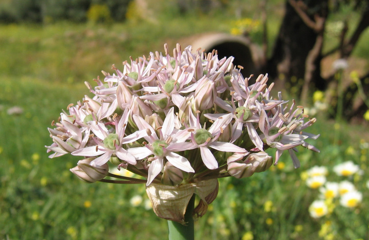
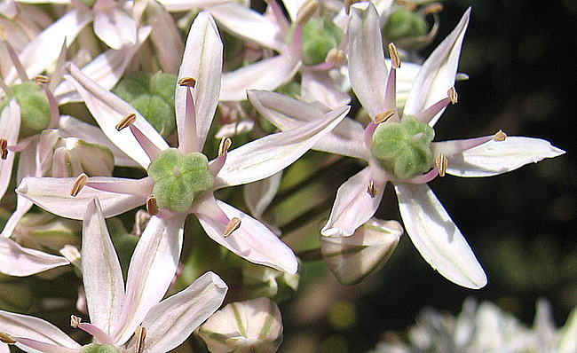
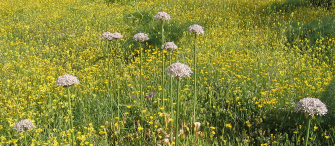

| PHRYGANA | Fauna | Flora | Galles | liste des espèces |
contact -
info - commentaires phrygana1 (at) gmail.com |
| Particularités crétoises | nouveautés | Mines | ressources naturelles |
| Allium nigrum L. |
| 55 | Flora | AMARYLLIDACEAE | Allioideae | Allium L. |
|  Allium nigrum Agia Galini 17 avril 2006 |
| l'Ail noir, l'Ail de Chine - Black Garlic - Dunkler Lauchen | |
| Feuilles: 3 à 6 basilaires, linéaires assez larges, avec un apex pointu, beaucoup plus courtes que la tige. | |
| Tige de section ronde. Plante glabre. | |
| Fleurs: rose pâle à blanc rosé, portées en ombelle hémisphérique (jusqu'à 10 cm de diamètre). Elles sont en forme d'étoile lorsqu'elles sont ouvertes (12 à 16 mm de diamètre). Tépales larges de 1,5 à 3 mm, avec une veine médiane verte. Etamines à filet de teinte blanc rosé, élargies à la base et brusquement rétrécies au sommet, plus courtes que les tépales. Anthères jaune beige. Ovaire vert foncé. | |
| Hauteur: 80 - 100 cm | Type biologique: géophyte bulbeux |
| Floraison: mars avril mai | |
| Altitudes: 0 - 800 m | |
| Statut en Crète: indigène | |
| Biotopes en Crète: bords des chemins, champs cultivés, oliveraies, vignobles, collines basses. | |
| Origine: Europe méridionale orientale (Italie, péninsule des Balkans) | |
|

Allium nigrum Agia Galini 17 avril 2006 |
|
 Allium nigrum Agia Galini 17 avril 2006 |
|
 Allium nigrum Agia Galini 17 avril 2006 |
| 15 avril 2013 |
| © paul fontaine 2007 -- 2012 |